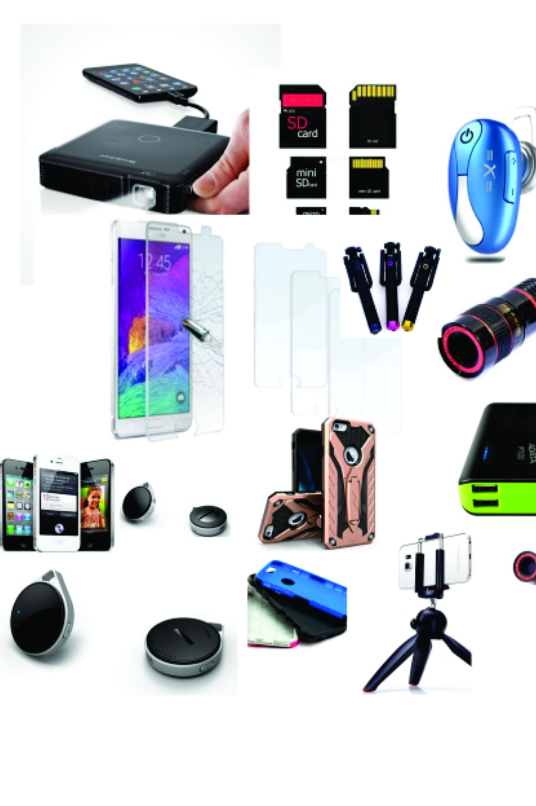

It Is Our Job To Teach You About Cell Phones
The world of cell phones has become so immense and complicated in recent years that many folks hate the idea of having to wade through the options and make a selection. However, the key to solving that problem is to spend some time learning about the topic by reading articles like the one below. That way, buying a great phone becomes easy.
Make sure to consider data minutes when signing up for your cell phone plan. Some plans have very restricted minutes, and this can turn into a bad deal if you use your phone to access the Internet or play games often. If your phone is capable of doing these things, get the most out of it by purchasing a plan that supports adequate usage.
If you must call information via a cell phone, note that you can call without big fees. One way is to call 800-411-FREE. This will help you get your required information after you listen to a shot ad. سماعات شاومي مي ترو
If you have a weak signal, try not to use your phone. It will drain the battery very quickly. Also, if you have your phone on your person, do not shove it down into the depths of your purse or briefcase, as it is unlikely to get a good signal down there. If you are concerned that your signal is weak, it is best to turn the phone off completely.
Smartphones will start to slow down as they age. Since it does begin to show its age, you may find that as time goes on, updating the phone with new technology and apps might become harder. You wll need to make a decision of what you prefer. You can stick with what you have, but not update it, or you can get a new phone that can handle the updates.
Do not use the Wi-Fi on your cell phone if you are in a place that has access to a computer. Many people do not realize that this is an easy way to rack up excess bills. You should log onto the computer and save the data usage for the times that you really need it.
If you have a smart phone, it is a good idea to turn it completely off every few days. It only takes a few minutes to power it down and then turn it back on. This will help clear your memory of unneeded data and make your phone run more optimally.
If you are in an area that has a very low signal, you should turn your phone off. Leaving it on will only end with you having a dead battery. You should also try keeping your phone out in the open more since the signal is a bit weaker in purses, drawers and other closed places. شاشة حماية ايفون 12

If you're concerned about cell phone radiation, use a headset instead of holding your cell phone to your ear. Typically, every cell phone comes prepackaged with a head set. You can start using it right out of the box. Consider buying a second for the car so that you always have one handy.
If your cell phone ever gets wet, turn it off immediately. Take it apart and remove the SIM card, battery and any other removable internal parts. Next, put it all into a bowl full of rice. Lave it overnight to allow the rice to dry it out thoroughly. Blow it out and it should work!
While it may be en vogue to use a smartphone, if you need to save money, stick to your flip phone. Not only can you get one for free with a contract at your favorite mobile carrier, you'll find that replacing it if it breaks is significantly cheaper. You can also save by not having internet access in your plan.
Keep your phone close to a signal. Burying your phone in a purse or desk drawer can impact the signal strength. When the phone works harder to gain a strong signal, your battery life will drop. Keep the phone in a place where it can easily reach signal and you will keep your battery up.
If you need to get a new cellphone, look for one of the latest model smart phones. These phones have nearly the capability of an Ipad or similar device that connects to the internet. This will allow you to check your email, pay bills and access online information away from home. باور بانك هيرو 20000
To make your cell phone's charge last longer, don't leave your phone on vibrate. There are certain places where you just don't want your phone going off. If you're going to be somewhere where you don't want your phone heard, consider turning the ring volume on low. Leaving the phone on vibrate uses up a significant amount of battery power.
Because there are seemingly countless options when it comes to cell phones these days, many folks feel overwhelmed and confused when they need to go buy one. Clearly, though, this need not be the case. Use the tips presented in the article above, and the process can be demystified and actually quite simple.